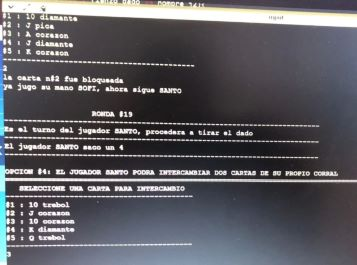
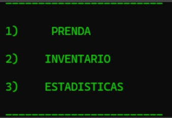

☰

¡Hola! Soy Aylin y vivo en Zona norte de Buenos Aires, Argentina.
Mi primer acercamiento en la Programación fue un taller en mi secundaria
de Digital House soibre programación básica.
Habia hecho mi primer trabajo grupal que fue una calculadora bastante simple.
Descubrí que soy una persona resolutiva, que se adapta muy bien a los cambios y que ante la presión, mantengo
la calma a mi alrededor y hago que el problema quede desmenuzado, y así, poder actuar de forma segura.
Una de mis habilidades fuertes es la escucha activa y creo que con esto, entendí que debía ser programadora.
Trabajé desde 2022 a 2024 en Fundación María de Guadalupe dando talleres para alumnos de secundaria
y en el area de Administración.
En Administración realice tareas de imputación, atención al cliente de forma virtual y presencial,
orden de pago, cobro, cierre de caja y exportación de haberes.
Por otro lado, en el area Pedagogico aprendi bastante a "Aprender a enseñar"
fue un gran desafio
los primeros meses, pase por diferentes grupos reemplazando a profesores que enseñaban programación básico y estructura
de datos, diagramas de flujo y entendimiento.
Estudié Ingeniería en Informática en la UBA, los primeros años estuvieron llenos de desafios y finalmente,
En Agosto de 2023 empecé la Tecnicatura en Programación en la UTN de General Pacheco, postergando mis estudios en la ingenieria para
conseguir un trabajo estable que me permita seguir estudiando
anteriormente, habia aprendido el algoritmo de hacer ejercicos con python practicando con ejercicios
de clases, listas enlazadas, pilas y colas.
Sin embargo, estudiando en la Universidad Tecnologica Nacional aprendí a realizar
diferentes trabajos y razonamientos en grupos, conociendo a compañeros muy inteligentes y profesores muy sabios
que inspiran a seguir estudiando y aprendiendo sobre las nuevas tecnologías.
Fue mi primer trabajo práctico en la carrera y mi primer juego a realizar.
Construimos un juego con mis compañeros, que se ejecuta por terminal.
El susodicho se llama CLUTCH que es para dos jugadores, se utilizan cartas seleccionadas de un mazo de la baraja Francesa y un dado de seis caras.
El objetivo es formar una escalera en el órden: 10 - J - Q - K - A una vez que uno de los jugadores logra formarla, finaliza el juego.

Junto compañeros de la facultad realizamos este trabajo práctico que surgió de la idea de
ayudar a emprendedores que recien comienzan a organizar sus productos
En "Prendas" se desplegará las opciones para cargar una nueva prenda, modificar, eliminar y cargar una venta.
"Inventario" se podrá filtrar por cualquier nombre que coincida con lo buscado y ver detalle de la prenda a travez de su codigo único.
"Estadistica" da opciones de ver los productos más vendidos, el historial de venta con hora emitida y el porcentaje de ganancia por mes.
Se utilizo c++, archivos y programación orientada a objetos.

Cuando empecé el cbc sucedió la pandemia por lo que las clases se atrasaron unos cuatros meses, empezando a estudiar en Junio.
en esos mese aproveche para estudiar de forma autonoma la estructura básica de una página web,
de lo cual salió un pequeño diseño hecho con HTML, CSS y Bootstrap.
Desde la secundaria era una chica proactiva y me gustaba estar en movimiento constante, por lo que empezar a estar unicamente en casa
fue muy nuevo para mí, pero logré adaptarme muy bien a este cambio y ayudar a mi familia en lo que podía.

Este trabajo lo hice junto a mis compañeros de la UTN.
Se realizó en dos semanas una terminal que permite agregar articulos según categoría y marca a elegir, que permite
agregar más de una imagen a un articulo.
Puede filtrar, buscar cualquier articulo a traves de la conneción a SQL.
Tecnologías usadas fueron C# y Winsforms.

Este trabajo final fue realizado como tarea para un curso de Desarrollo Full Stack para Digital House.
Con mi equipo trabajamos por slack, figma y siguiendo el metodo SCRUM.
Se trata una app para compra y venta de accesorios tecnologicos, contiene buscador, carrito, contacto, stock, entre otras.
Haciamos daylis cada semana para ir revisando lo avanzado. Además, en las clases pudimos ver un poco
de React.
En este trabajo los realicé para una matería de la facultad de Ingeniería.
El profesor nos proporciono una API propia (esta adjuntado junto con los archivos) para que podamos
usarla y realizar una estructura de cuadro que pueda ejecutarse por diseño gráfico.
Al pintar cada cuadro el programa debía reconocerlos para poder eliminar o volver a traer lo eliminado.
Tambien, poder agregar colores y sacarlos.